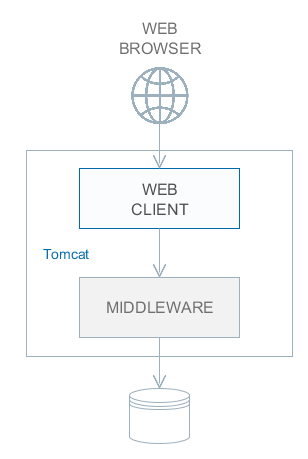
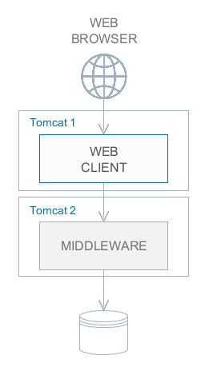
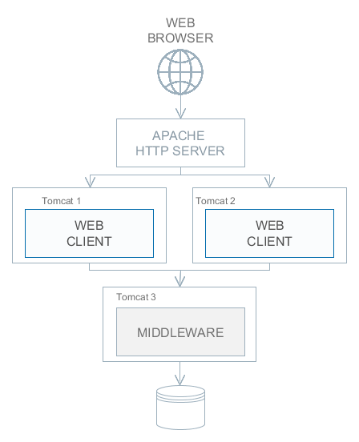
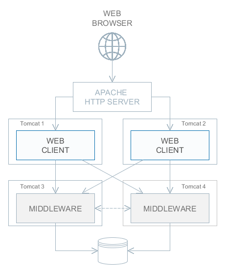

5.6. 应用程�扩展
æœ¬ç« èŠ‚ä»‹ç»�在负载å¢�åŠ æˆ–è€…æœ‰æ›´å¼ºçš„å®¹é”™éœ€æ±‚çš„æ—¶å€™æ€�æ ·å¯¹åŒ…å�« Middleware å’Œ Web Client blocks çš„ CUBA 应用程åº�进行扩展。
|
扩展级别 1. 两个 blocks 部署在å�Œä¸€ä¸ªåº”用æœ�务内 è¿™æ˜¯ä½¿ç”¨æ ‡å‡†å¿«é€Ÿéƒ¨ç½²æµ�程的最简å�•æƒ…况。 在这ç§�情况下，Web Client å’Œ Middleware 之间的数æ�®ä¼ 输性能å�¯ä»¥è¾¾åˆ°æœ€å¤§åŒ–ï¼Œå› ä¸ºå½“å�¯ç”¨ cuba.useLocalServiceInvocation 应用程åº�å±�性时，å�¯ä»¥è·³è¿‡ç½‘ç»œå †æ ˆç›´æ�¥è°ƒç”¨ Middleware æœ�务。 |
 |
|
扩展级别 2. Middleware å’Œ web 客户端部署在ä¸�å�Œçš„应用程åº�æœ�务内 这个选择å�¯ä»¥åœ¨ä¸¤ä¸ªåº”用æœ�务器之间分散负载，ä»�而更好的使用两个æœ�务器的资æº�。还有，用这ç§�部署方å¼�ä»� web 用户æ�¥çš„负载会对其它进程的执行影å“�å°�一些。这里的其它进程是指处ç�†å…¶å®ƒå®¢æˆ·ç«¯ç±»å�‹ã€�è¿�行计划任务还有潜在å�¯èƒ½çš„一些ä»�ä¸é—´å±‚（middle layer）æ�¥çš„集æˆ�任务（integration tasks）。 对æœ�务器资æº�çš„è¦�求：
在这�部署选择或者更��的部署情况下，web 客户端的 cuba.useLocalServiceInvocation 应用程��性应该设置� |
 |
扩展级别 3. Web 客户端集群æ�é…�å�•ä¸€ Middleware æœ�务 è¿™ç§�部署选择是用在，由äº�并å�‘用户数太大导致 Web 客户端的内å˜éœ€æ±‚超过了å�•ä¸€ JVM 的承载能力的场景。集群ä¸å¤šä¸ª Web 客户端å�¯åŠ¨å��，用户è¿�æ�¥é€šè¿‡è´Ÿè½½å�‡è¡¡æ�¥å¤„ç�†ã€‚所有的 Web 客户端都è¿�æ�¥å�Œä¸€ä¸ª Middleware æœ�务器。 多个 Web 客户端自动æ��供了一定级别的容错。但是，ä¸�支æŒ�在客户端之间å¤�制 HTTP 会è¯�，如æ�œæœ‰ä¸€ä¸ª web 客户端æœ�务器计划外宕机了，所有è¿�到这个æœ�务器的用户需è¦�é‡�新登录应用程åº�。 这个部署选择的é…�置在 é…�ç½® Web 客户端集群 介ç»�。 |
 |
扩展级别 4. Web 客户端集群æ�é…� Middleware 集群 这个方案是最强大的部署选择，能æ��供全é�¢çš„ Web 客户端和 Middleware 容错性和负载å�‡è¡¡ã€‚ è¿�æ�¥åˆ° Web 客户端的用户通过负载å�‡è¡¡æ�¥å…¥ã€‚多个 Web 客户端æœ�务器跟 Middleware 集群å��作æ��ä¾›æœ�务。Middleware æœ�务ä¸�需è¦�é¢�外的负载å�‡è¡¡ - 通过 cuba.connectionUrlList 应用程åº�å±�性已ç»�足够定义 Middleware æœ�务器 URL 列表。å�¦å¤–还å�¯é€šè¿‡é›†æˆ� Apache ZooKeeper æ�’件用æ�¥å�š Middleware æœ�务的动æ€�å�‘ç�°ã€‚ 多个 Middleware æœ�务会交æ�¢ç”¨æˆ·ä¼šè¯�ã€�é”�ç‰ä¿¡æ�¯ã€‚è¿™æ ·çš„è¯�，Middleware å�¯ä»¥æ��供全容错 - å…¶ä¸ä¸€å�°æœ�务宕机之å��，å�¦ä¸€å�°å�¯ç”¨çš„ Middleware æœ�务会æ�¥è¿‡ç”¨æˆ·çš„请求继ç»å¤„ç�†ï¼Œä»�而ä¸�会影å“�终端用户的感å�—。 这个部署选择的é…�置在 é…�ç½® Middleware 集群 介ç»�。 |
 |